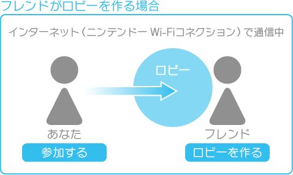
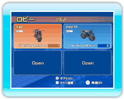
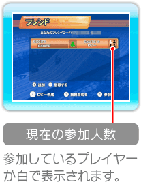
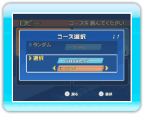

17 |
Wi-Fiレースの始めかた／ フレンドとレース |
 |
|
Wi-Fiレースの「フレンドとレース」では、「フレンドリスト」に登録しているプレイヤー（以降「フレンド」）と、レースをすることができます。 フレンドを選ぶ ※フレンドリストはWi-Fiレースのメニューで「フレンドとレース」を選び、
ロビーに入る  
・自分でロビーを作る 
・友だちのロビーに入る ※ロビーがFULL（満員）になっているときは、入ることができません。 
コースを選ぶ ※「ランダム」を選んだ場合、または制限時間内にコースを選ばなかった場合は、オリジナルコースが自動的に選ばれることはありません。
|
 |
 |
 |